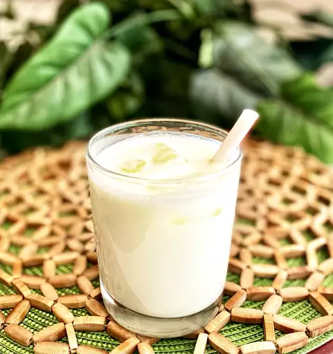

Chilled Lassi
Home

Description
Learn what a lassi drink is with this basic recipe for the popular Indian beverage. You can adjust the amount of
yogurt
or water for a thicker or thinner consistency. Garnish with fresh mint if desired
Ingredients
- ice cubes
- 1¾ yogurt
- 1½ ice water
- 6 cubes ice, crushed
- 2 teaspoons white sugar
- 1 pinch salt
Directions
- Gather all ingredients.
- Fill 6 tall glasses with ice cubes.
- Place yogurt, ice water, crushed ice, sugar and salt in a blender; blend untill frothy.
- Pour over ice cubes in the glass to serve